CLICK IMAGE AND NEXT BUTTON FOR DETAIL
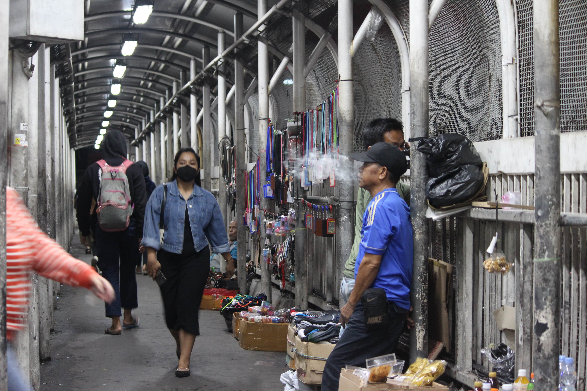
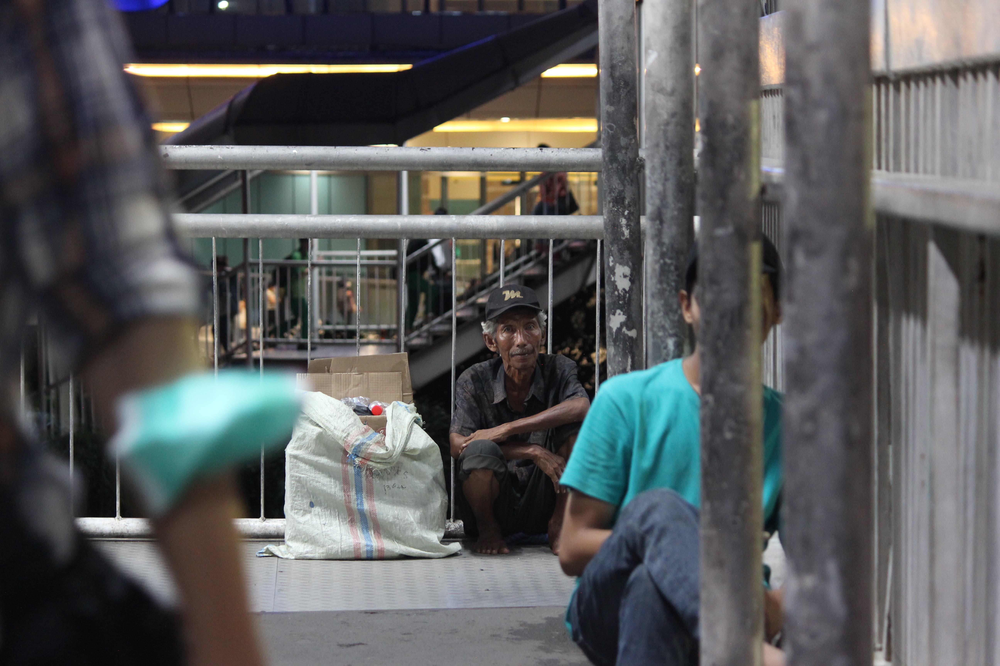
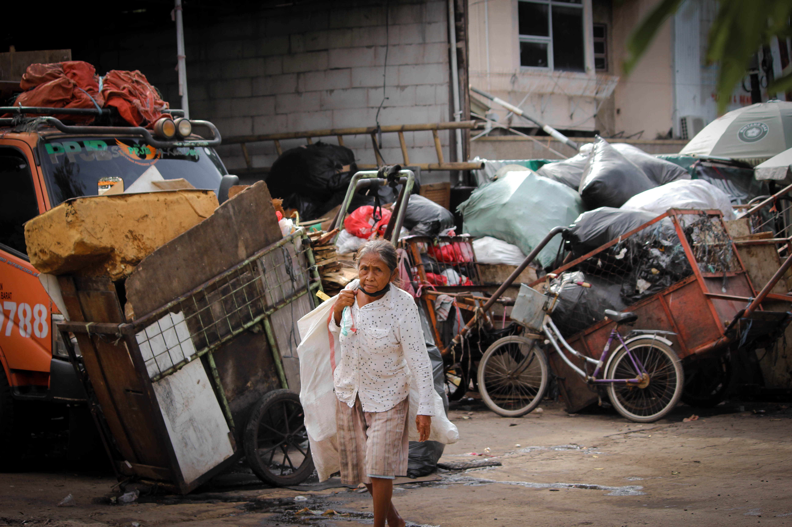
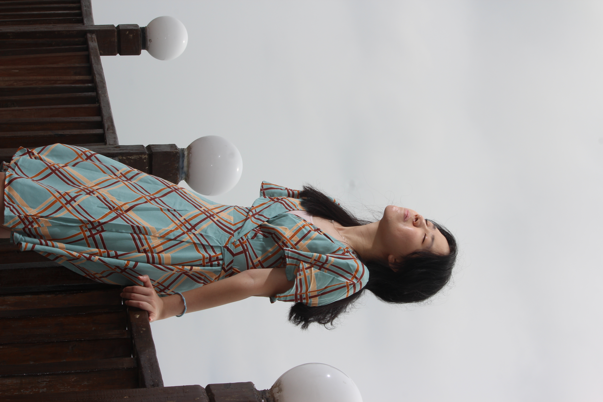
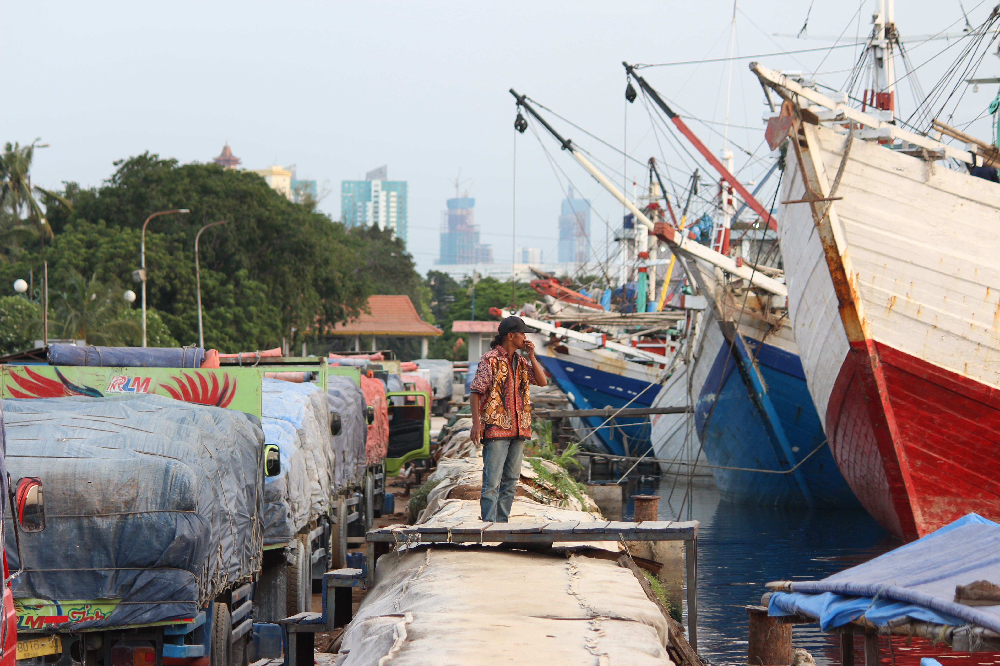
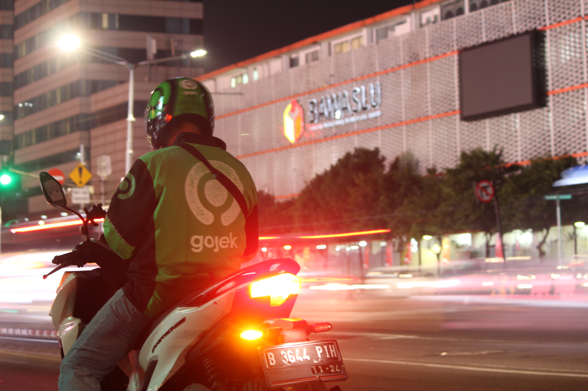
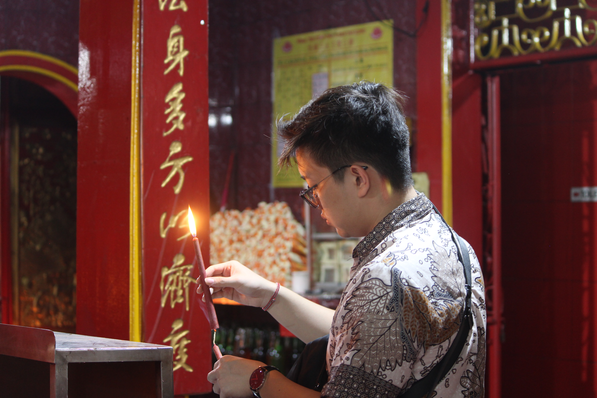
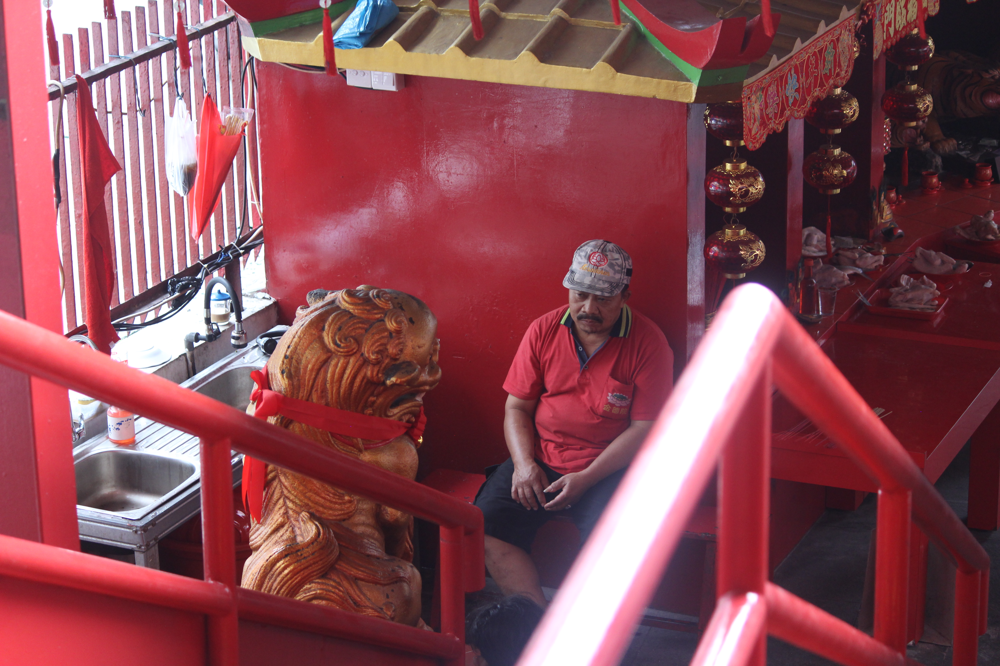
This photo captures Jakarta’s nonstop energy, where people are always on the move, even at night. The city’s hustle reflects the relentless pursuit of dreams, with its vibrant, tireless spirit driving residents to keep pushing forward.
Camera Settings
ISO : 1600
Aperture : 4.0
Shutter Speed : 1/20
Focal Length : 55 mm
"Living with Poverty" shows an elderly beggar in front of a luxury mall, highlighting Jakarta's stark economic divide. It underscores the city's indifference to the less fortunate, urging us to be more aware and grateful for our opportunities.
"Undying Hardwork" captures an elderly woman tirelessly working in a garbage dump, despite her age. Her relentless effort symbolizes perseverance, offering a powerful lesson for younger generations to work hard toward their goals, no matter the circumstances.
"Serenity" shows a girl peacefully enjoying the calm sea on a wooden bridge, with soft lighting from flash fill. The photo invites us to "enjoy life to the fullest" and appreciate the simple, calming moments.
Life in Sunda Kelapa captures a fisherman pausing at Sunda Kelapa Harbor, reflecting on the sea after a day’s hard work. The photo highlights the strong connection between humans and nature, reminding us to take moments to appreciate life’s simple beauties.
Camera Settings:
Technique : Short Depth of Field
ISO : ISO-200
Aperture : f/5
Shutter Speed : 1/80
Focal Length : 96 mm
This photo captures a motorcyclist moving through the busy streets of Jakarta, symbolizing personal freedom in the midst of the city’s fast-paced life. It reflects how, despite the rules and routines, individuals can still navigate and progress in a modern urban environment.
"The Enlightening Light" shows a man praying in a Jakarta temple, with candlelight symbolizing peace and spiritual clarity. It reminds us to pause in our busy lives and reconnect with the Creator, finding light amid life’s chaos.
This photo captures a temple guard resting peacefully in the temple, offering a moment of calm and solitude amid the busy city. It highlights the contrast between the hustle of urban life and the tranquility found in a place of worship.
CLICK IMAGE FOR DETAIL
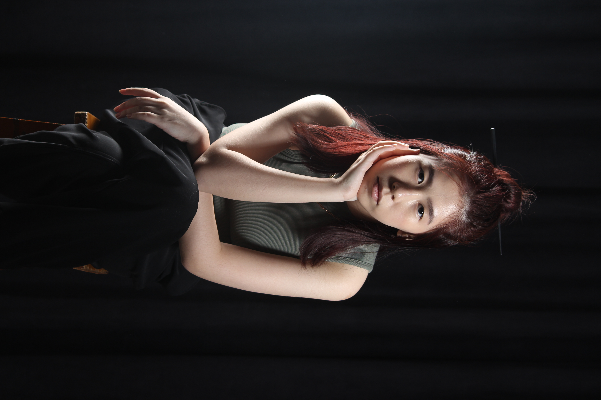
Main Light + Rim Light
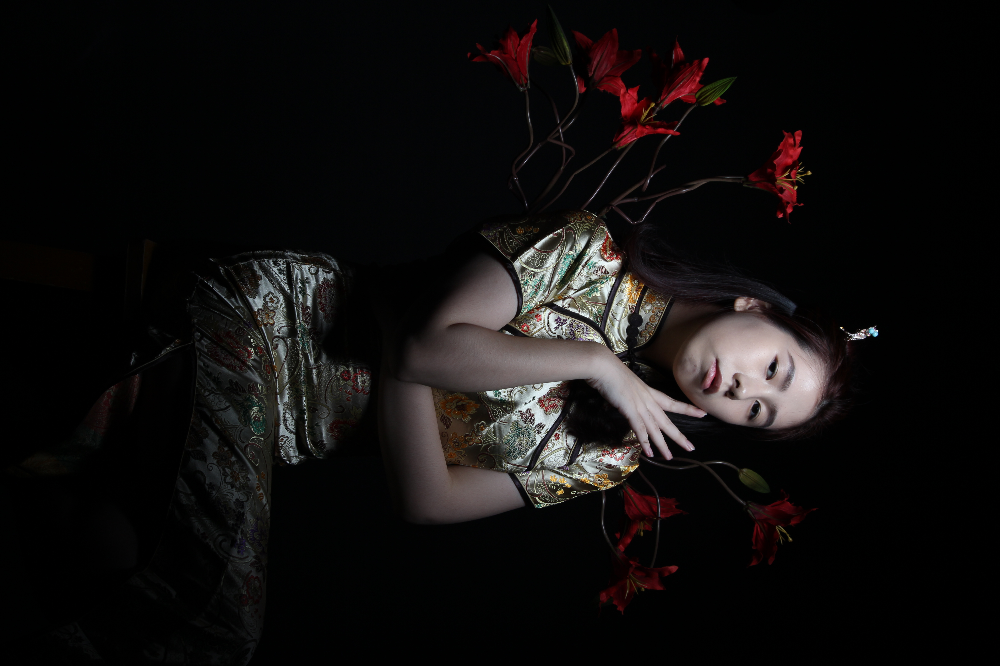
Main Light + Fill Light
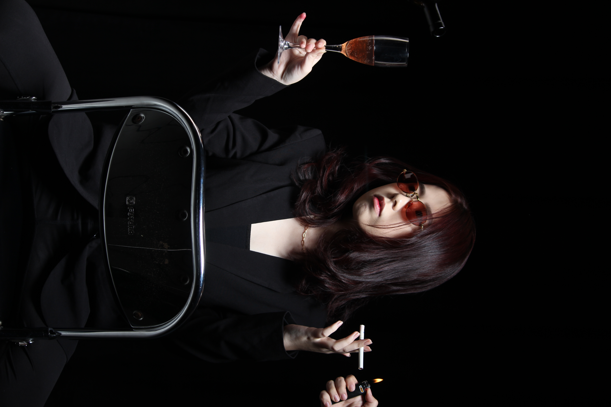
Main Light
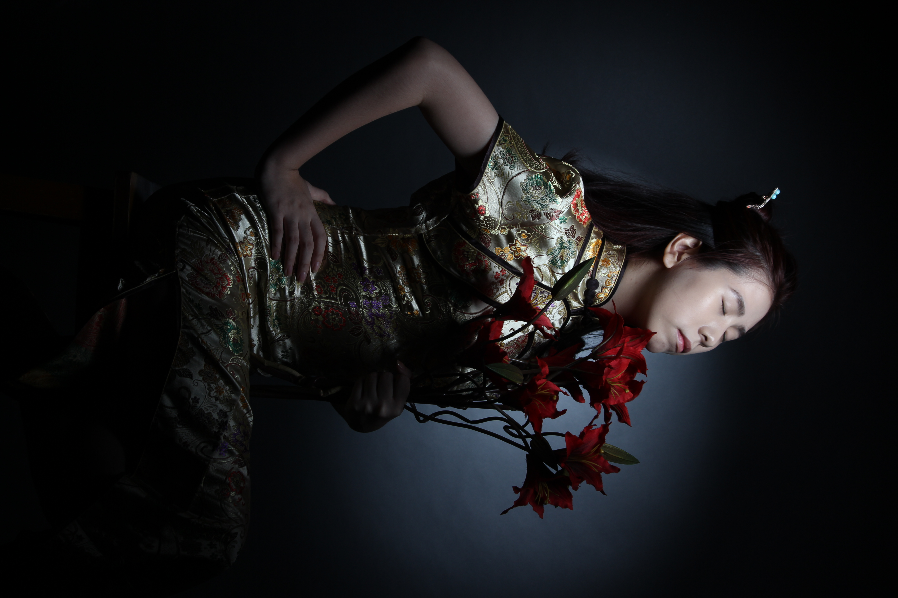
Main Light + Rim Light
Camera Settings:
ISO: ISO-100
Aperture: F/5.6
Shutter Speed: 1/125
Focal Length: 70 mm
Camera Settings:
ISO: ISO-100
Aperture: F/8.0
Shutter Speed: 1/125
Focal Length: 55mm
Camera Settings:
ISO: ISO-100
Aperture: F/5.6
Shutter Speed: 1/125
Focal Length: 60mm
Camera Settings:
ISO: ISO-100
Aperture: F/8.0
Shutter Speed: 1/125
Focal Length: 60mm
HOVER FOR DETAIL
This project was made by me and my team as my college final GROUP assignment. It involved recreating the painting Judith Beheading Holofernes by Carvaggio, a renowned work from the Renaissance era. My team and I adapted this concept for a Tresemmé advertisement. In this project I was in charge in creating the Stage Backdrop / Environment, Photographer, and Editor of this picture.
Renaissance Painting Reference
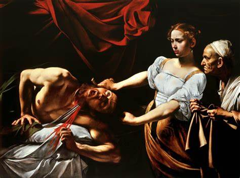